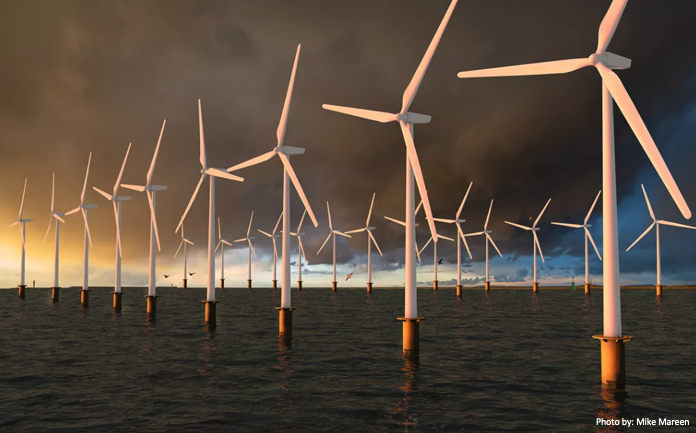
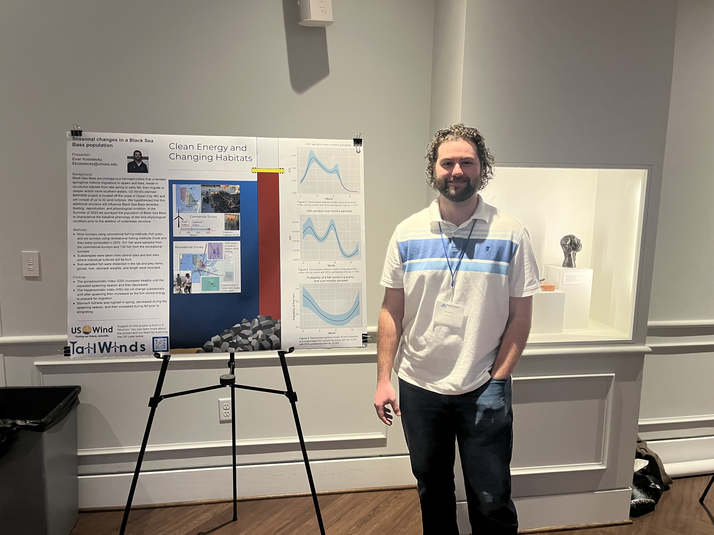
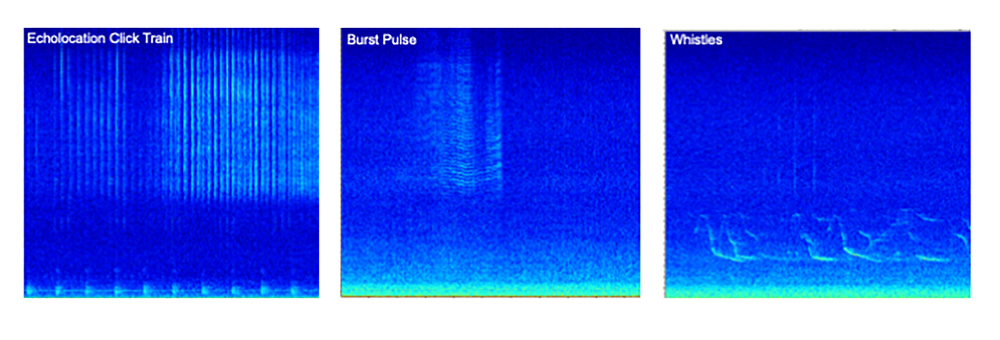

What’s new in the news
On the Web
US Wind receives approval for next steps in offshore wind development “Maryland wind energy company gets approval for major offshore wind project” 4 December, 2024. 
Tailwinds at the American Fisheries Society Tidewater Chapter Meeting
 Analyst Evan Kostelecky presented his poster “Clean energy and changing habitats” at the American Fisheries Society Tidewater Chapter meeting on February 29, 2024.
Abstract:
Black Sea Bass are protogynous hermaphrodites who undertake springtime inshore migrations to spawn and feed, reside in structured habitats from late spring to early fall, then migrate to deeper and/or more southern waters. The MARWIN offshore wind lease area (US Wind) is located off the coast of Ocean City, MD and will consist of up to 22 wind turbines. We aim to characterize the baseline phenology of diet and physiological condition prior to the addition of underwater structure. We sampled Black Sea Bass using commercial (fish pot) and recreational (hook and line) fishing methods across nine months in 2023. We kept subsampled fish from the two surveys totaling 531, 130 samples, respectively. Samples were dissected and prey items, gonad, liver, and stomach weights were recorded. We hypothesized that the gonadosomatic index (GSI) would increase steadily until spawning started then decrease suddenly; that the hepatosomatic index (HSI) would not change substantially until after spawning then increase as the fish stored energy to prepare for migration. We predicted stomach fullness would increase as the bottom temperature warms through the summer but decrease or level off as the fish commence spawning. Our findings showed average GSI increased until June then decreased until October, and there was a decrease in average HSI during the months of August to October. Average stomach fullness decreased from April to August and increased from September to November.
Fin whales have arrived for the 2023 - 2024 migration season!
Since February 2023, we’ve had 2 days of fin whales calling near the Maryland coast in September. Fin whales are the second largest whale on earth and the fastest swimmer of all baleen whales. We detect this species seasonally off of Ocean City, Maryland using the real-time whale buoy. Beginning late in August fin whales can be occasionally detected off the east coast of the United States. Once October comes around their detections are more frequent until March.
Fin whales produce very low-frequency pulses in a series lasting minutes to hours. They are identified by low-frequency 20 Hz pulse trains that can be heard across long distances up to 100 km. Fin whale sounds are so low-frequency they are not audible to the human ear, however you can listen to recordings of fin whales only when the sounds are sped up within the human hearing thresholds. Males produce these songs, possibly for breeding season, reproduction, and possibly to help other individuals find food.
Here’s an image from one of our most recent detection of fin whales on September 30, 2023 where you can see repeated, low frequency pulses, every 9-10 seconds.

In the image below we can see fin whale calls including higher frequency harmonics. Harmonics (the parallel lines stacked above the 20Hz pulse) indicate that the whale may have been close to the buoy. These fin whale detections occurred on September 29, 2023.

In this image we have evidence there are at least 2 different individual fin whales singing. One fin whale (marked by orange arrows) appears to be closer to the buoy and the calls are louder and longer, appearing around 5, 15, 25, 35 seconds (upper panel). A second fin whale (marked by the blue arrows) may be further away from the buoy based on the fact the pulses are shorter and quieter, appearing around 18 and 38 seconds (upper panel) and 4 seconds (lower panel).

What Does a Dolphin Say?
Bottlenose dolphins  and common dolphins
and common dolphins  produce a diversity of vocalizations to orient, feed, and socialize in their environment. Similar to a bat, dolphins produce biological sonar clicks to navigate and hunt. Echolocation clicks often occur in trains and are highly directional, meaning the energy in each click is focused in the forward direction and bounces off objects in the water. The returning echo tells the dolphin what, where, and how far the object is to inform its next move. Burst pulses are packets of high repetition pulses that include a range of sounds such as buzzes, squawks, and brays. They are the least characterized vocalization due to the diversity in pulsed call types and may be related to feeding, aggression, mating, and courtship. Whistles are tonal, narrow-band frequency modulated calls important for communication that vary in shape and structure. Dolphins use them in a variety of social contexts related to identification, localization, and group cohesion. Signature whistles are a type of whistle unique across individuals and are important for recognition of individuals in a social group.
produce a diversity of vocalizations to orient, feed, and socialize in their environment. Similar to a bat, dolphins produce biological sonar clicks to navigate and hunt. Echolocation clicks often occur in trains and are highly directional, meaning the energy in each click is focused in the forward direction and bounces off objects in the water. The returning echo tells the dolphin what, where, and how far the object is to inform its next move. Burst pulses are packets of high repetition pulses that include a range of sounds such as buzzes, squawks, and brays. They are the least characterized vocalization due to the diversity in pulsed call types and may be related to feeding, aggression, mating, and courtship. Whistles are tonal, narrow-band frequency modulated calls important for communication that vary in shape and structure. Dolphins use them in a variety of social contexts related to identification, localization, and group cohesion. Signature whistles are a type of whistle unique across individuals and are important for recognition of individuals in a social group.
 Listen to an example of whistles here
How Do We Monitor The Secret Lives of Dolphins?
The Metocean Buoy has been deployed in the Maryland Wind Energy Area (MWEA) by Ocean Tech Services (OTS) to measure and monitor wind conditions. It was first deployed in May 2021 and houses additional sensors for monitoring a range of environmental variables. Underwater close by the buoy, biological acoustic sensors were also deployed and included an LS-1X passive acoustic recorder. This device consists of a hydrophone and PVC housing for batteries and internal electronics. It collects underwater recordings in the frequency range of most dolphin vocalizations that we can analyze aurally and visually to better understand dolphin occurrence and behavior in this region over time. This type of recorder can be set on a recording cycle where it collects data for only some periods of time to save battery life, allowing for long-term monitoring of our study area!

LS-1X
On the Web
NOAA offers answers to FAQs in the wake of increased Humpback whale mortality on the US east coast: Frequent Questions—Offshore Wind and Whales
A Featured Scientist

Dr. Helen Bailey was quoted in the article The Ocean Got so Loud That Dolphins Must Now ‘Shout’ Over Noise Pollution 19 January, 2023.
CBLOutreach (@CBL Outreach)Tweeted: #Dolphins will adjust their calls in the face of underwater noise pollution, with Helen Bailey, research professor at @UMCES, describing it to the BBC as “similar to when we shout louder when we are talking in a noisy bar.”
Outreach
UMCES attends US Wind event
Monday, July 10, 2023 UMCES was invited to attend an event hosted by US Wind for Maryland Governor Wes Moore and state officials to learn about the planned renovation of the Sparrows Point Steel, and interview key partners involved in the US Wind project. TailWinds PI Dave Secor and analyst Kirsten Silva provided overviews of the TailWinds project. The Governor was particularly captivated by the sounds of humpback whales recorded by the Real-time Whale Bouy.


From Our Scientists
Lauren Rodriguez shows you how to dissect a black sea bass
Dave Secor on the FRM project’s experimental design
The Music of Whales
Imagine yourself in a rainforest. The air is hot and humid, the smells of the environment surround you: damp soil, decomposing wood, and plants,so many different types of plants. Now imagine what you might hear; the croaks, barks, whirring of frogs, the chirp and buzz of insects, the songs and calls of birds, monkeys calling to each other with yips, screeches and shouts. So many different species being heard at the same time in the same ecosystem.
Where sound is such a vital part of marine mammals’ lives, it should be unsurprising that many different species can be vocalizing at the same time within the marine ecosystem, similarly to a terrestrial ecosystem. Every marine mammal has a distinct sound(s) they make that are unique to that species. For those who may not know much about the marine environment, they may find it remarkable to know that many different marine species can be vocalizing at the same time. The Ocean City, MD Real-time Whale Buoy transmitted data via satellite containing this exact scenario on 31 January, 2023. Three different baleen whale species were identified vocalizing within the same 15 minute period.

Almost like a of sheet of music this period depicts the composition of all the playing parts of a musical underwater. In the higher frequencies at 400Hz across the panels you can see the melody, the humpback song pattern, shown by pitchtracks (alike to notes on a music sheet) with upsweeps and downsweeps. And in the background the harmony of faint North Atlantic right whale upcalls at 200Hz above 20 seconds in the first panel and 11 seconds in the second panel. Finally, the fin whales with the bass, the part of the musical composition that human ears cannot hear because it is so low frequency. This sound is a steady pulse at 20Hz labeled with a four underneath. UMCES scientists are given a preview of this composition and will be able hear the audio after the recording data has been collected. For now, this is a reminder that no matter what ecosystem you are in, there is always the chance to hear many species at the same time. - Kirsten (Faculty Research Assistant)